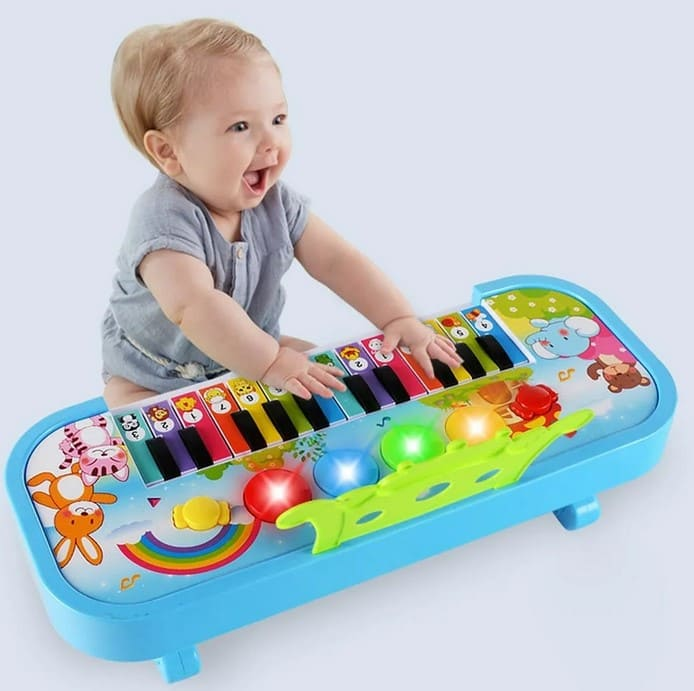
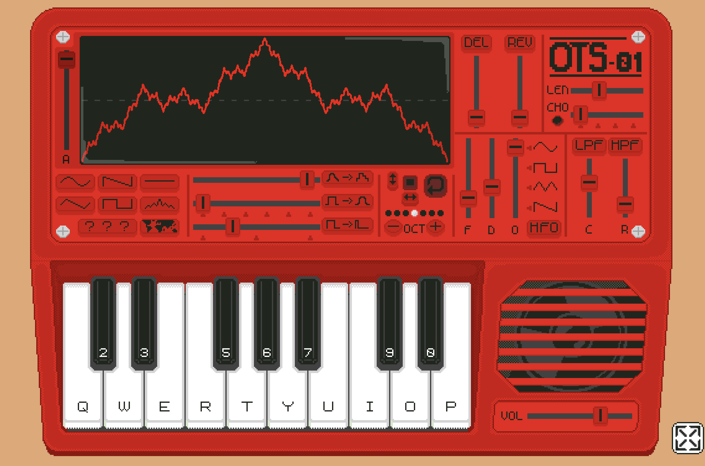
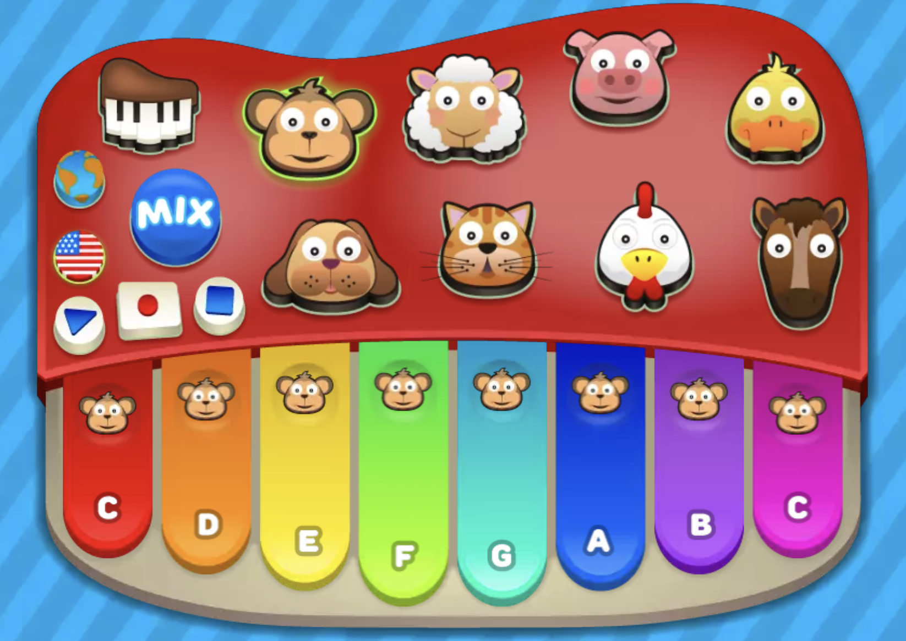
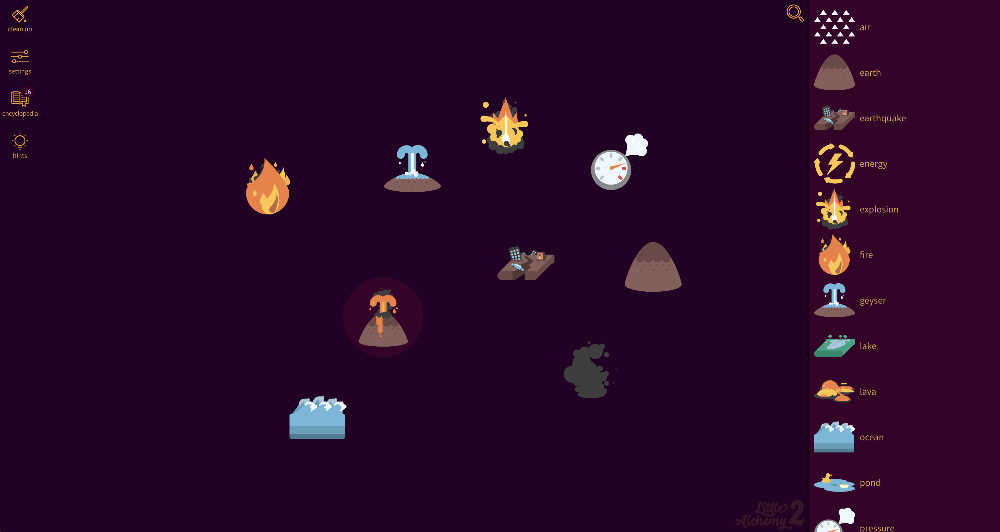
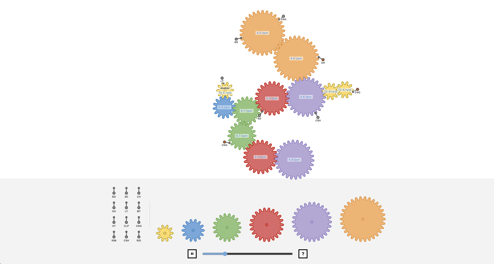

Scenario: Musical Toy for Toddlers
Prompt:
Design a way for young children with minimal language skills to explore music.
Context:
Browser based musical instruments offer users the ability to dynamically perform music and explore complex audio design. While these interactions allow for a depth of control, they can be intimidating for many adult users, let alone you children whose language skills are still developing.
Discussion:
After reading the brief I have identified some key considerations that shape this project. At the most basic level, the instrument should allow young children to explore music and create sounds. However the context suggests that this exploration should not rely on traditional musical knowledge or lengthy language instructions. Many digital instruments are designed around complex controls and interfaces that assume users can understand musical concepts, which will create a barrier for toddlers who are still developing their communication skills.
Therefore I see the purpose of the instrument less as teaching children how to play music and more as encouraging exploration and discovery through sound. For young children, the act of experimenting with different sounds and understanding the relationship between their actions and the resulting audio that is produced is much more valuable than creating a structured musical piece. The instrument should become a space where children can express themselves without needing to understand rules, notation, or instructions.
Building from this I'd say there are three important values that should guide the design: apprapproachability, playfulness, and feedback. The instrument should be approachable by allowing children to immediately understand how to interact with it without relying on text or explanations. This does not mean the instrument should be overly simple but rather that its complexity should be something discovered naturally through play. It should also feel playful, and encourage experimentation and curiosity rather than focusing on achieving a correct outcome. Finally, the instrument should provide clear feedback, as toddlers learn by observing the results of their actions. All of the sounds, visuals, and animations should help reinforce the connection between what they do and what they hear.
Synopsis:
I will design a browser-based synthesiser aimed at toddlers, using a large keyboard for playing notes and a simplified set of controls for changing the sound. A large spatial input area will allow children to change qualities of the sound by moving the mouse around, while the keyboard provides a familiar way to play individual notes.
Response to Purpose and Worth:
This responds to the purpose of allowing young children to explore music without relying on language or prior musical knowledge. The keyboard provides a familiar way of playing notes, while the other controls allow children to experiment with how those notes sound. Rather than presenting technical controls such as filter frequency, Q, attack and decay, these aspects will be simplified into larger visual controls and the spatial input area. Moving around the spatial input area will allow children to hear changes in the sound without needing to understand what a filter/other synthesis parameter is. I would also use clear visual and audio feedback to show the relationship between the child's actions and the sounds they produce. This keeps the instrument approachable and playful while still keeping the complexity of a synthesiser for children to discover through experimentation.
Framing:
A key concept of this project is the appeal to children. Considering the target demographic is toddlers (usually defined as between 1 and 3 years of age) the toy must capture and captivate short attention spans. Research on young children states that toddlers “can't pay attention for too long” and often “quickly shift from one activity to another” (McQuillan et al., 2021). This means that it is important that my instrument has large controls, bright visuals and simple interactions to encourage experimentation. I want to apply these ideas to a synthesiser without making the instrument feel like a toy that has had all of its musical functionality removed. The underlying instrument will still use synthesis concepts like waveform, filter, envelope and volume, but these will be presented in a way that doesn't require the user to understand the technical terminology behind them.

The characterisation of the instrument will be playful and colourful, with large controls and visual feedback that responds to the user's interactions. The keyboard will provide a familiar way of playing notes, while the spatial input area will be used to explore changes in the sound. I will be using the mousemove event to map the position of the mouse to different synthesis parameters, allowing the child to discover changes in the sound through easy experimentation.
I will focus on simple interactions that are able to be easily grasped by young minds. I will be intentionally avoiding more complex controls such as detailed numerical values, multiple sliders and technical parameter names. I also don't want the instrument to rely heavily on written instructions, as this would conflict with the scenario of designing for children with minimal language skills. The project will remain within a browser-based environment and will use JavaScript for the synthesis and interaction, with the spatial input being the main extended technique included in the design.
Interaction Design Analysis:
Example 1: OTS-01
I chose this example to discuss information design, particularly how the controls of a synthesiser are presented to the user. The overall layout of OTS-01 is quite similar to how I am planning to structure my own instrument, with the keyboard positioned towards the bottom and the main controls positioned above it. This example is also particularly relevant to my project as I am also planning to have an interactive space above the keyboard which uses the mouse position to change different settings of the synthesiser.

One thing I don't like is that many of the controls are represented by very small icons, makes their purpose difficult to understand. Some of the buttons are also labelled with only 1-3 letters, so the user needs some prior knowledge or has to experiment to understand what they do. There aren't any tooltips either (that I could find) and while it does list all features below, it does not indicate which feature is controlled by which button. This could make the initial interaction more difficult for someone who has no experience with synthesis.
An interesting feature I found out by accident was that the user can interact with the screws on the outside of the instrument and unscrew them to remove the cover, revealing additional controls and parameters. However I don't think I would include something like this in my instrument since it will be designed for toddlers and should therefore be simple and without confusion.
Experimenting with this interface has influenced my information design by making me want to keep the main controls of my instrument simple and visually obvious, particularly because it is designed for toddlers. I could take some inspiration from the hidden controls of OTS-01 by keeping the more complex synthesis parameters underneath simpler interactions. However, I would avoid relying on small icons or technical abbreviations, as these would be difficult for my target audience to understand. Instead, the spatial input area could allow children to change these parameters through movement and provide visual/audio feedback to show what is happening.
Example 2: Online Toy Piano
I chose this example to discuss characterisation, particularly how visual design can make an instrument feel appropriate for children. The Online Piano uses a very simple interface with lots of bright colours and large visual elements. It also makes use of recognisable animal faces so that children can easily identify them without needing to understand any written information. This makes the instrument feel more like a children's toy than a traditional piano and helps make the interface more interesting to interact with.

A feature I found interesting was the recording function. This could add another reason to continue interacting with the instrument, as children can create something and then listen back to what they have made. This might be a function something to consider implementing in my instrument.
However, I think the instrument is also too simple in some areas. The piano only includes the white keys and does not have the sharp keys that would normally sit between them. It also doesn't allow the user to play notes using their computer keyboard which limits the user to only interacting by pointing and clicking with the mouse, a much slower method than having multiple buttons to press. While this simplicity helps make the instrument approachable, it also removes some of the functionality I would want in a musical instrument, even a kids one. Also another thing I don't like is that the piano is surrounded with an overstimulating amount of ads, which I (obviously) will not be including whatsoever in my project.
This has influenced my project by making me want to use a similar visual characterisation, with bright colours, simple shapes and recognisable imagery, while retaining more of the functionality of a synthesiser. I would also like to include a recording feature so that children can listen back to the sounds they have created. The main goal is to make the instrument visually appealing and easy to approach without simplifying the underlying instrument to the point where there is little left to explore.
Example 3: Little Alchemy 2
I chose this example to discuss worth, particularly how children can be provided with both entertainment and educational value. Little Alchemy 2 has a very simple interface, with most of the interaction consisting of dragging and combining different elements. Despite this there is a lot for the user to discover, with the game introducing ideas about science and how different things in the world are created. This makes it feel more like playing a game than learning.

Sense of discovery is a key part of this experience. The user is not given every possible combination straight away and instead has to experiment to find new elements. When something new is created, it gives the user a sense of achievement and encourages them to continue exploring. This can give children a sense of worth in what they have created, as they can feel proud of discovering something themselves.
While Little Alchemy 2 is a game rather than a musical instrument, I think there are still some similarities that are relevant to my project. Both rely on simple interactions while allowing for a larger amount of complexity to be discovered over time. It also provides educational value, just like my instrument will introduce toddlers to basic musical concepts and allowing them to learn by experimentation.
Little Alchemy 2 has influenced my project by making me want to provide a similar sense of discovery. The instrument will let children experiment with the keyboard and spatial input area and gradually discover how their actions affect the sound. This gives it worth beyond simply making noise as children can learn about sound and music while feeling like they are discovering it themselves.
Example 4: Gear Ratio Drum Machine
I chose this example to discuss purpose, particularly how an unusual interface can change the way users approach making music. Gear Ratio has a very simple interface, with most of the screen being white and only a few coloured gears, labelled sticks and a BPM slider at the bottom. However it provides a unique and creative way to make music through the interaction of gears. This encourages users to think about making music in a way they might not be used to, and not just rely on the controls of a traditional musical instrument.

This website is the most unique example I've analysed. Users connect gears together and place sticks around them, with each interaction between the rotating gears and sticks producing a sound. This provides a clear visual representation of how different parts of the instrument are interacting to produce sound. However there are some aspects of the interface that make it harder to understand. The sticks are only labelled with two or three letters, which makes their purpose unclear without prior knowledge. The text is also quite small, which could make it difficult for some users to read. There is also a large amount of empty space which feels like it could be used more effectively. The BPM slider at the bottom does not have a clear purpose, as it isn't labelled and could easily be mistaken for a song progress bar or volume control.
Gear Ratio has influenced my project by making me interested in creating a musical instrument that uses an unusual interaction while still making its purpose clear to the user. I will be encouraging experimentation through a spatial input interaction that is different from simply adjusting regular synthesiser controls. Although compared to Gear Ratio I want to make the relationship between the interaction and the sound more obvious through larger visual elements and clearer labels.